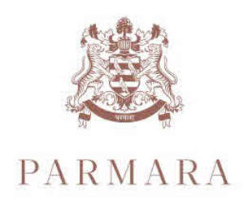

Trade Mark Journal No.2025/017 25 April 2025
UK00004185297 7 April 2025 (14,35)
Mark 1
Mark 2

- Class 14
- Watches; Chronographs for use as watches; Chronographs as watches; Chronographs [watches]; Dials for watches; Clocks and watches; Watches and clocks; Wrist watches; Bracelets for watches; Quartz watches; Straps for watches; Wristlet watches; Sports watches; Movements for clocks and watches; Movements for watches and clocks; Pendant watches; Alarm watches; Faces for watches; Pocket watches; Diving watches; Silver watches; Housings for clocks and watches; Mechanical watches; Chains for watches; Parts for watches; Cases for watches and clocks; Automatic watches; Oscillators for watches; Dress watches; Electronic watches; Bands for watches; Women's watches; Watch cases [parts of watches]; Fittings for watches; Wrist straps for watches; Straps for wrist watches; Stop watches; Electric watches; Cases for watches; Jewellery; Necklaces [jewellery]; Brooches [jewellery]; Jewellery brooches; Pendants [jewellery]; Bracelets [jewellery]; Brooches [jewellery, jewelry (Am.)]; Ornaments [jewellery]; Amulets being jewellery; Amulets [jewellery]; Pearls [jewellery]; Trinkets [jewellery]; Necklaces [jewellery, jewelry (Am.)]; Fashion jewellery; Jewelry; Gold jewellery; Lockets [jewellery]; Jade [jewellery]; Brooches [jewelry]; Jewelry brooches; Brooches being jewelry; Clasps for jewellery; Charms [jewellery]; Charms for jewellery; Jewellery charms; Enamelled jewellery; Pearls [jewellery, jewelry (Am.)]; Ornaments [jewellery, jewelry (Am.)]; Items of jewellery; Jewellery items; Rings being jewellery; Rings [jewellery]; Pearls [jewelry]; Amulets [jewelry]; Jewellery made from gold; Jewellery made from silver; Diamond jewelry; Jewellery chain of precious metal for anklets; Jewellery containing gold; Jewellery chain of precious metal for bracelets; Jewellery in precious metals; Jewellery of precious metals; Jewellery fashioned from non-precious metals; Jewellery fashioned of semi-precious stones.
- Class 35
- Accounting advisory services; Marketing advisory services; Business advisory services; Business consultancy and advisory services; Business advisory and consultancy services; Business research and advisory services; Business management consultancy and advisory services; Consultancy and advisory services for business management; Advisory services for business management; Business management advisory services; Management (Advisory services for business -); Advisory services relating to marketing; Consultancy and advisory services relating to personnel management; Consultancy and advisory services in the field of business strategy; Consultancy and advisory services relating to business management; Advisory services relating to market research; Advisory services relating to business analysis; Advisory services relating to business planning; Advisory services relating to business administration; Advisory services relating to business organisation; Sales management services; Sales promotion; Sales promotion services for third parties; Sales promotion for third parties; Sales promotion for others; Advertising services relating to the sale of personal property; Consultancy relating to sales promotions; Procurement of contracts for the purchase and sale of goods and services for others; Procurement of contracts for the purchase and sale of goods and services; Arranging of contracts for the purchase and sale of goods and services, for others; Retail services connected with the sale of clothing and clothing accessories; Retail services in relation to jewellery.
Parmara Ltd